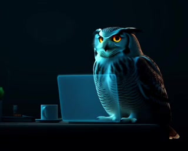
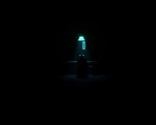
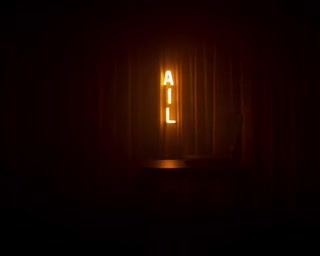
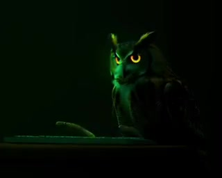
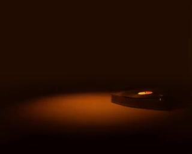
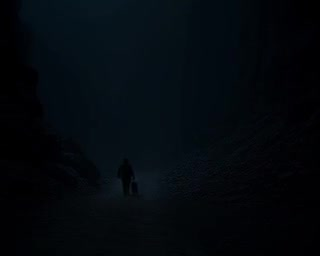
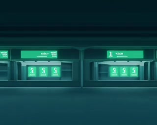

Paste the API Key
Industrial folk. An owl pastes an API key into a glowing terminal, gets 'invalid format — off by one', and reads error messages in a bed made of them. Wan 2.1.
Wan 2.1 · 320×256One song, one video — generated locally on the M4 Mac Mini, stitched together overnight. No cloud, no API, no shortcuts.
The first one — a coder's anthem from the album ECONNREFUSED. OWL as the coder, hunched at a glowing terminal, green code scrolling, the sun coming up. Thirty-two short clips, each rendered on the Mini, stitched to the song. More videos are in the works — one for every song we release.

Industrial folk. An owl pastes an API key into a glowing terminal, gets 'invalid format — off by one', and reads error messages in a bed made of them. Wan 2.1.
Wan 2.1 · 320×256
Dark country. A cowboy counts tokens like bullets in a digital saloon, an owl watches from the piano, and every word's a penny. Wan 2.1.
Wan 2.1 · 320×256
Lo-fi Americana. A neon motel sign, a laptop at 3AM, a misplaced comma, and the long night's work done. OWL keeps watch.
Wan 2.1 · 320×256
A coder's anthem — typing hello world, green terminal, fan spinning, errors, dawn. OWL is the coder.
Wan 2.1 · 320×256
Dark Americana / WWII Pacific Theater. Vinyl record, ballroom, coral graves, paper cranes, black rain. One owl as witness.
Wan 2.1 · 320×256
Dark Country. A cowboy gives confident but wrong advice — the meta-hallucination song. OWL watches.
Wan 2.1 · 320×256
Dark Country. A triumphant build that crashes in production — green logs, red lights, and the loneliest silence in tech. OWL keeps watch.
Wan 2.1 · 320×256Industrial Folk. The setup phase — "fifteen minutes, tops," the docs said. A bed made of error messages and a pillow full of things the docs left unsaid. OWL keeps pasting.
Wan 2.1 · 320×256More videos coming — one for each song we release.